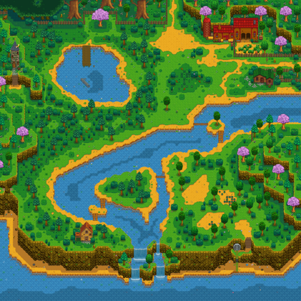
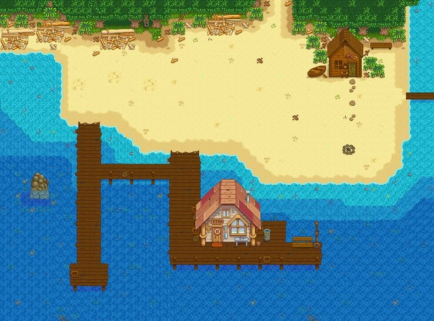
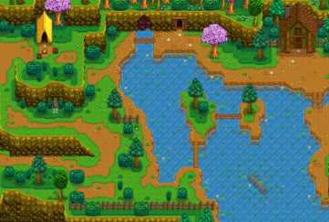
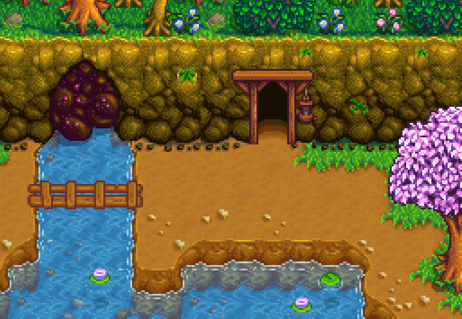

Welcome To Pelican Town
Looking For Family Fun?
Visit our Museum and Library, located on the east side of town just south of the Blacksmith. Open from 8am to 6pm daily, you can relax and curl up with a good book or explore our vast collection of local artifacts.

You may also enjoy spending some time in the Community Center. Open 24/7 The Community Center is the main hub for our smaller community hangouts. Between crafts, exercise, and generally lounging the Community Center is our one stop hangout spot

Wanting to spend some time outdoors?
We have several great locations whether your hoping to get a hike in, want to soak up the sun, or just have a relaxing picnic.

To the west of town you will find Cindersap Forest, a densly wooded location with several fishing spots. The tree coverage makes this a great place to have a shady picnic on a sunny day. You will also find many great foragables here as well.

To the south of town is the beach. Alongside fishing, you can also enjoy shell collecting, bonfires, and swimming.

Finally, to the north of town is the base of our mountain ranges. Great spot for an early morning hike as well as fishing and foraging.
Needing Some Adventure?
For those who are looking for more adventurous actvivties, we jave got you covered.

Want a little taste of magic? If your lucky our local wizard will allow you entrance to his lavish dwellings.

Our local mine has it all, beautiful gems, wonderful treasure, and monsters galore. With convient minecart acess you can quickly return to town to identify your finds with the blacksmith and Curator

Looking to meet like minded individuals? Check out our Adventures Guild located just east of the mines entrance. You can assist in local objectives, aquire new eqiupment, and meet others who share in your passions here.